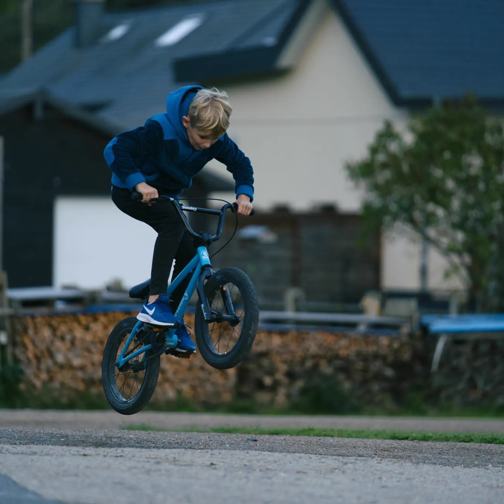
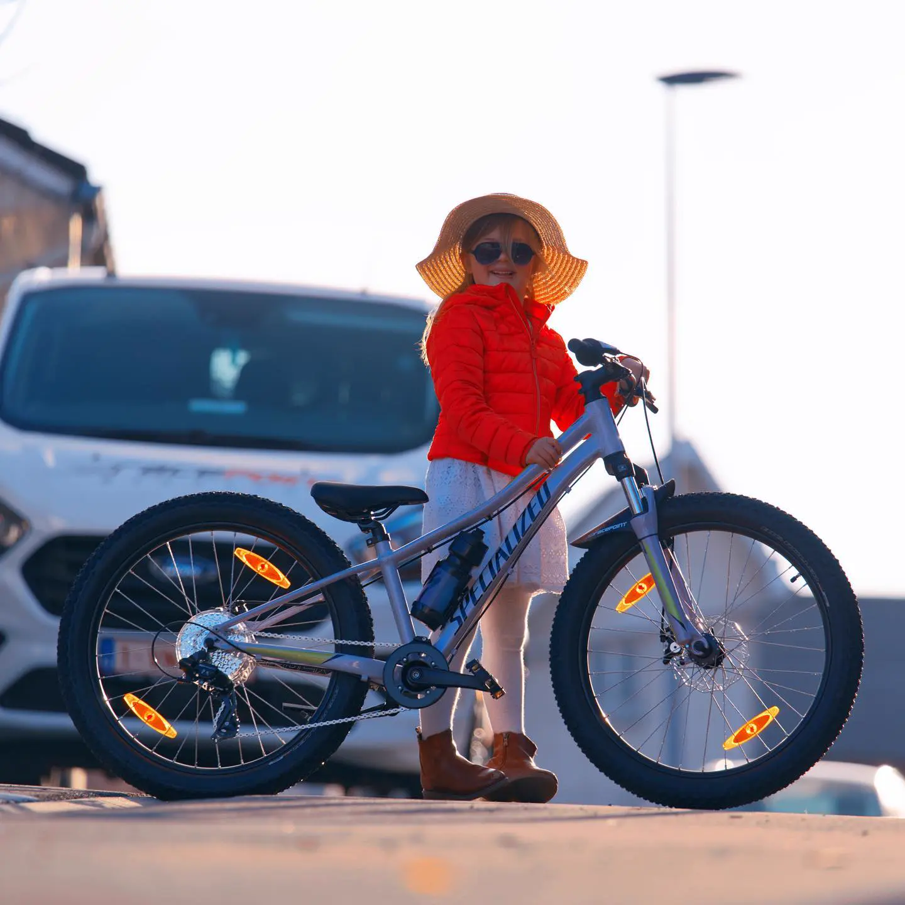
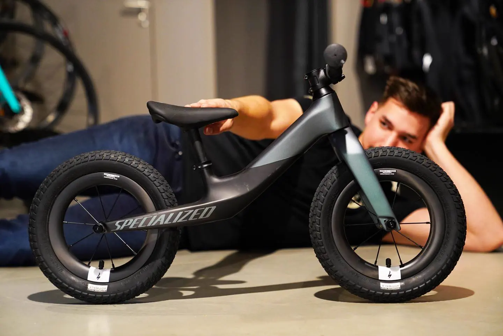

Passform zuerst
Körpergröße, Schrittlänge, erreichbare Bremshebel und Fahrkönnen zählen. Eine Altersangabe allein ersetzt keine Größenberatung.



Kinder & Familie · Specialized
Für die ersten Meter im Hof, den Schulweg und den Ausflug mit allen. Vom Hotwalk Laufrad bis zum Riprock 24, dazu das Turbo Vado für die Eltern. Bei Kinderrädern zählen Körpergröße und Schrittlänge mehr als das Alter.
Kinderrad und Alltagsrad
Beim Kinderrad zählen Passform und gut erreichbare Bremsen. Für die Eltern gibt es das Turbo Vado.
Körpergröße, Schrittlänge, erreichbare Bremshebel und Fahrkönnen zählen. Eine Altersangabe allein ersetzt keine Größenberatung.
Das Riprock 24 (749 €) hat eine 1×9-Schaltung und hydraulische Scheibenbremsen. Ob es zu deinem Kind passt, sehen wir beim Probesitzen im Laden. Bei der Farbe hat dein Kind meist eine feste Meinung.
Für die Eltern im Alltag kommt das Turbo Vado in Frage, mit Licht, Schutzblechen und Gepäckträger. Für gemeinsame Touren hilft es, wenn du uns eure Strecken nennst.
Kinderräder und Vado ·
Mit Bildern, Ausstattung und Herstellerpreis. Im Laden steht mehr, zum Beispiel das Hotwalk.
Herstellerpreise in Belgien, geprüft am 14.10.2026. Kein Racepoint-Angebot. Ausführung, Preis, passende Größe und lokaler Bestand werden persönlich bestätigt. Leasing & Finanzierung auf Anfrage.
Achims Filme
Originalfilme aus Achims Archiv, keine aktuellen Verkaufsangebote.
KI-Berater
Schreib uns, wie groß dein Kind ist und wie es fährt. Der KI-Berater sucht passende Modelle aus dem Katalog. Wenn es persönlich wird, übernimmt Achim.
Termine sind nur Anfragen. Gebucht wird erst, wenn das Racepoint-Team zusagt.